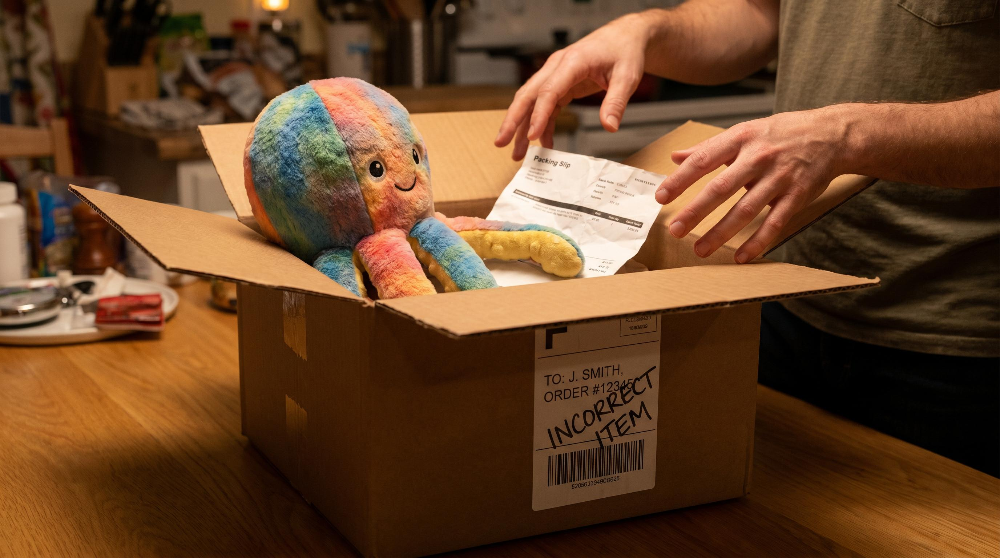

"Det var kun en enkelt fejl." Det er den sætning de fleste siger inden de har regnet det igennem. For når du lægger alle omkostningerne til en fejllevering sammen, er belobet sjeldent hvad du forventede.
En fejllevering er ikke bare prisen på en ny forsendelse. Det er kundeservice-tid, retur-logistik, ny pakning, og i mange tilfaelde en kunde der aldrig kober hos dig igen.
Her er det fulde regnestykke.
👉 SmartPack reducerer fejlraten med scan-baseret plukning fra dag et. Se hvad det betyder for dit lager
De direkte omkostninger
Disse er lette at maale:
| Omkoestningspost | Typisk beloeb |
|---|---|
| Ny forsendelse til kunden | 40-80 kr. |
| Retur-fragt fra kunden (hvis kunden returnerer) | 30-60 kr. |
| Ny pakning og materiale | 10-25 kr. |
| Arbejdstid til ny pakning og forsendelse | 25-50 kr. |
| Kundeservice-kontakt (email, telefon) | 50-100 kr. |
Sum af direkte omkostninger: typisk 155-315 kr. pr. fejllevering.
Og det er inden vi taeller de skjulte udgifter.
De skjulte omkostninger
De er svære at maale, men de er reelle:
- Tabt fremtidigt salg. En utilfreds kunde handler ikke igen. Hvis en gennemsnitskunde kober for 800 kr. om året i 3 år, er tab af denne kunde 2.400 kr. i tabt livstidsvaerdi. Selv hvis kun 20% af kunder med fejlleveringer forlader dig permanent, er det et stort beloeb.
- Negativ omtale. Kunder der får en forkert pakke klager. På Trustpilot, i Facebook-grupper, til bekendte. En 1-stjerne anmeldelse om "forkert vare" påvirker konverteringsraten på din webshop for alle fremtidige købere.
- Ledelsestid. En fejllevering kræver tid fra dig eller din lagerchef til at efterforske, rette og rapportere. Det er tid der ikke bruges på vaekst.
- Medarbejder-moral. Fejl demoraliserer. Plukkere der laver fejl, og ved det, arbejder langsommere og med større utryghed. Det er svaert at maale, men alle lagerchefer kan nikke genkendende til det.
Hvad er den reelle pris pr. fejllevering?
NÃ¥r vi medregner en realistisk andel af tabt kundeval og negativ brand-effekt, lander den reelle pris pr. fejllevering for mange webshops i intervallet 200-600 kr.
Lad os sætte det i perspektiv: en webshop med 3.000 ordrer om maaneden og 2% fejlrate laver 60 fejlleveringer om maaneden. Ved en gns. pris på 300 kr. pr. fejl er det 18.000 kr. om maaneden i spildt ressourcer. Det er 216.000 kr. om året.
Og det er for en webshop der ikke er specielt stor.
Hvad en fejlrate på 0,2% ville gøre
Samme webshop med 3.000 ordrer og en fejlrate på 0,2% laver 6 fejl om maaneden. Det er 1.800 kr. i direkte tab. Differensen til 2% fejlrate er 16.200 kr. om maaneden.
Scan-baseret plukning med et WMS som SmartPack reducerer typisk fejlraten fra 1-3% til 0,1-0,5%. Det sker fordi systemet bekraefter at den rigtige vare er scannet inden plukkeren lægger den i kassen. Ingen visuel fejl, ingen forkert antal, ingen glemt vare.
SÃ¥dan maaler du din fejlrate
Fejlrate = antal klager over fejlleveringer / antal ordrer afsendt x 100.
Men vaer opmaeerksom: klagetal undervurderer altid den reelle fejlrate. Mange kunder klager ikke, de sender bare ikke næste ordre. For at faa et reelt billede kan du periodisk inkludere et lille tilfaeldigt stikproeve-tjek af afsendte pakker (kontroller indhold mod ordreliste inden forsendelse).
Maael det maanedligt. Saet et maal. Kommuniker det til medarbdejederne. Fejlraten falder når den er synlig.